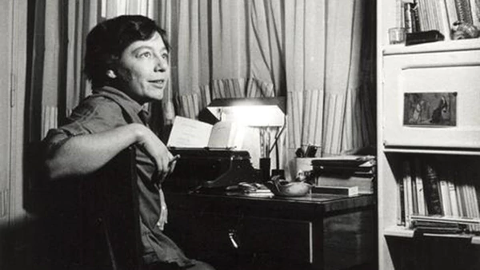
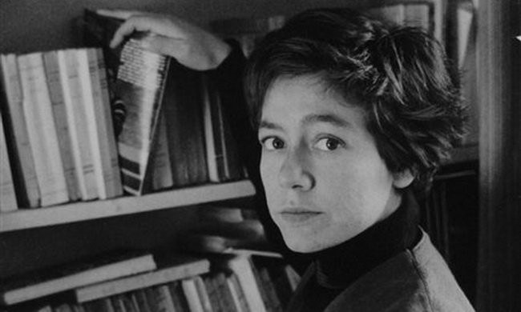

Flora Alejandra Pizarnik nació en Avellaneda el 29 de abril 1936, en el seno de una familia de inmigrantes rusos que perdió su apellido original al instalarse en Argentina: antes de ser argentinos, los Pizarnik eran los Pozharnik. Estudió en a la Escuela Normal Mixta de Avellaneda y se recibió en 1953. Un año después comenzó a estudiar Filosofía y Letras en la Universidad de Buenos Aires, al mismo tiempo que se inició en el mundo de las artes de la mano del pintor surrealista Batlle Planas. Además de pintura estudió periodismo, técnica que utilizaría para escribir críticas en distintos periódicos.
En 1955 publicó su primer libro de poemas: La tierra más ajena, de editorial Botella al mar. Cinco años después, con cuatro libros publicados, se trasladó a París. Allí trabajó para la revista "Cuadernos" y varias editoriales francesas, publicó poemas y críticas en varios diarios, tradujo a Antonin Artaud, Henri Michaux, Aimé Cesairé, e Yves Bonnefoy, y estudió historia de la religión y literatura francesa en la Sorbona. En esos años conoció a Octavio Paz, Julio Cortázar e Ivonne Bordelois. Volvió a Buenos Aires en 1964, conoció a su amiga Silvina Ocampo y publicó otras siete obras con poemas, escritos, relatos surrealistas y hasta novelas cortas. En 1971, recibió la beca Fullbright.
Falleció el 25 de septiembre de 1972, a los 36 años, después de ingerir 50 pastillas de Seconal. En el aniversario de su nacimiento, recordamos a Pizarnik con 13 poemas: